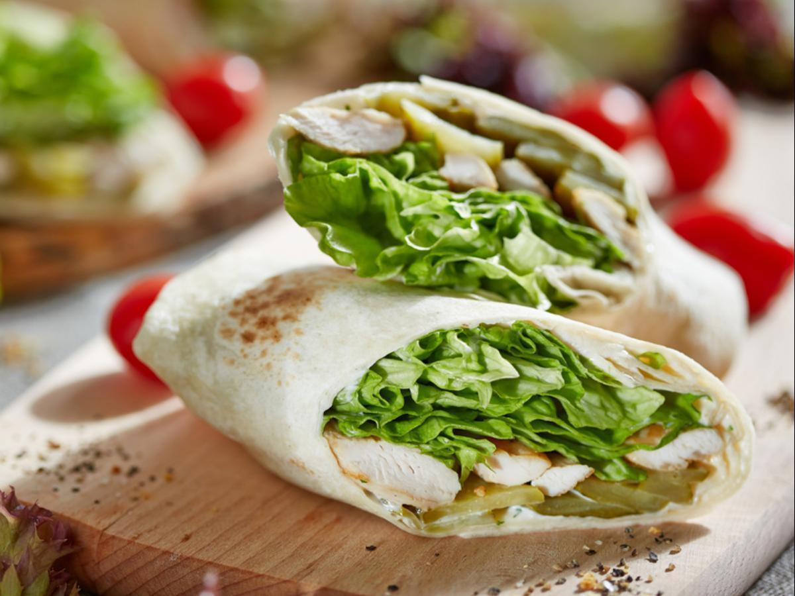

Chicken With Lavash

Description
This recipe is not only easy to make but also healthy. No meal preparation required.
No exotic ingredients required.
Ingredients
- 1 cucumber (about 4 ounces)
- 1 cup packaged cabbage-and-carrot coleslaw
\
- Half of a small red onion, sliced
- 1 tablespoon seasoned rice wine vinegar
- 1 teaspoon chopped pickled ginger, plus 1 ginger juice
- 1 teaspoon sesame oil
- 6 ounces sliced deli smoked chicken
- 1 piece lavash-style bread (about 10 1/2- x 9-inch piece)
Steps
- Ribbon cucumber with a vegetable peeler; discard core and tough outer skin. Toss ribbons in a bowl with coleslaw mix, onion slices, vinegar, chopped pickled ginger, ginger juice, and sesame oil to coat. Let stand 10 minutes, stirring occasionally, for flavors to combine.
-
Cut lavash into 4 equal pieces, and line each with one-fourth of sliced chicken; top with one-fourth of salad mixture. Bring sides of lavash together, and spear with wooden picks. Serve.